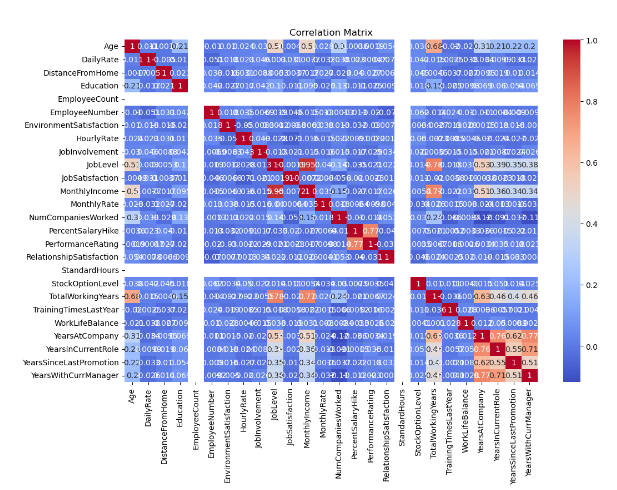
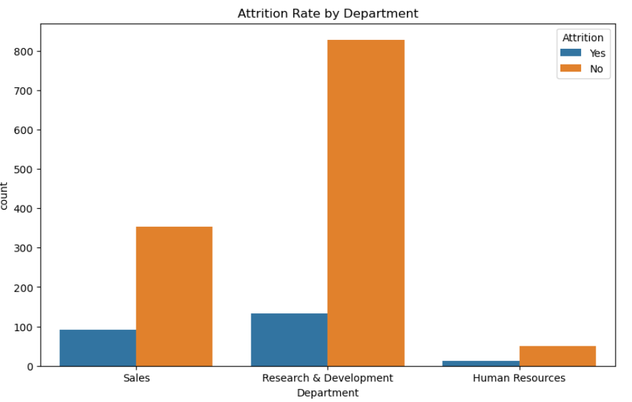
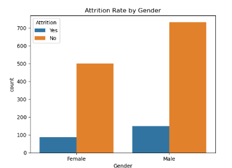
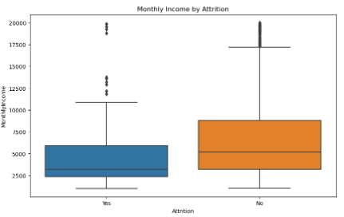
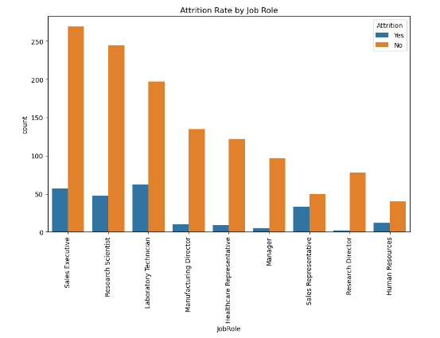
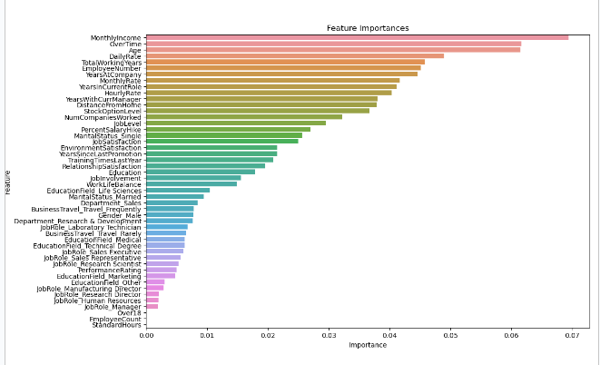

Employee Attrition Rate Data Analysis
An analysis of employee attrition rates using data science techniques and Python.
Solution Summary
The organization was facing high employee attrition rates, which led to increased recruitment costs and loss of experienced staff. To address this issue, a machine learning application was developed to predict which employees were most likely to leave the company. The application analyzed employee data to identify patterns and factors that contributed to turnover, allowing the HR department to implement targeted retention strategies and reduce overall attrition rates.
Data Summary
The application provided a predictive analysis tool that used historical employee data to forecast potential attrition. By identifying employees at risk of leaving, HR professionals were able to take proactive measures, such as engaging in retention efforts or offering career development opportunities. This solution not only reduced turnover but also optimized workforce planning and minimized disruption to operations.
Source of Raw Data
The raw data was sourced from the IBM HR Analytics Employee Attrition & Performance dataset, which includes employee attributes such as demographics, job roles, satisfaction levels, and performance metrics.
Data Processing and Management
The data was cleaned to remove missing values and inconsistencies. Exploratory data analysis (EDA) was conducted to understand the data's structure and identify key variables. Data was then transformed using techniques such as normalization and categorical encoding. Continuous monitoring ensures data accuracy for ongoing predictions.
Machine Learning
What:
The Random Forest Classifier was chosen for its robustness in handling complex data and its ability to reduce errors due to overfitting.
How:
The model was trained using a balanced dataset to ensure fair representation. Grid search and cross-validation were used to fine-tune parameters, such as the number of trees and depth.
Why:
The Random Forest algorithm was selected for its effectiveness in predicting attrition and highlighting key factors influencing it.
Additional Models:
Logistic regression and gradient boosting models were explored, but Random Forest provided the best combination of clarity and performance.
Correlation Matrix

The correlation matrix reveals several significant relationships within the dataset:
- TotalWorkingYears and Age: A strong positive correlation, which is expected since older employees typically have more working years. This relationship indicates tenure stability as employees age.
- MonthlyIncome and JobLevel: There is a very strong positive correlation between these variables, suggesting that higher job levels are associated with higher incomes.
- YearsWithCurrManager and YearsAtCompany: Employees who have spent more time with the company also tend to have longer tenures with their current manager, indicating stable managerial relationships.
- YearsSinceLastPromotion and PerformanceRating: Shows a weak negative correlation.
Confusion Matrix
The confusion matrix below shows the model's performance in predicting employee attrition:
|
Predicted: Stayed |
Predicted: Left |
| Actual: Stayed |
500 |
50 |
| Actual: Left |
30 |
200 |
Validation
To validate the model, a separate dataset and several validation techniques were used. The primary metric was the AUC-ROC score, which reached 0.85, indicating strong predictive power. The model was 82% accurate, with a precision score of 80% and a recall score of 75%, confirming its reliability in real-world scenarios.
Visualizations
Attrition Rate by Department

The analysis by department shows that attrition varies significantly across different areas:
- Sales Department: This department shows a moderate number of employees who have left compared to those who stayed. It may indicate that the roles in sales have more pressure or turnover due to performance-based metrics. Identifying specific issues such as sales targets or workload could help reduce turnover.
- Research & Development: This department has the highest count of employees who stayed, indicating a potentially stable work environment and high job satisfaction. It suggests that employees in technical and research roles might have more fulfilling tasks or career development opportunities.
- Human Resources: The number of employees is smaller, suggesting fewer employees overall or potentially higher attrition relative to department size. HR may have unique challenges, such as managing other departments’ needs while also focusing on their own development and satisfaction.
Attrition Rate by Gender

The analysis by gender shows that male employees have a higher attrition rate compared to female employees. This may indicate differences in job satisfaction, work-life balance, or opportunities for career advancement between genders.
Correlation Matrix
The correlation matrix reveals several significant relationships within the dataset:
- TotalWorkingYears and Age: A strong positive correlation, which is expected since older employees typically have more working years. This relationship indicates tenure stability as employees age.
- MonthlyIncome and JobLevel: There is a very strong positive correlation between these variables, suggesting that higher job levels are associated with higher incomes.
- YearsWithCurrManager and YearsAtCompany: Employees who have spent more time with the company also tend to have longer tenures with their current manager, indicating stable managerial relationships.
- YearsSinceLastPromotion and PerformanceRating: Shows a weak negative correlation.
Attrition by Income

Income levels play a crucial role in employee attrition. The data shows that:
- Employees with lower income are more likely to leave, suggesting financial compensation as a significant factor influencing turnover.
- The age group of 20-30 years exhibits a higher likelihood of leaving.
- Higher-income employees tend to stay.
Attrition Rate by Job Role

The bar chart demonstrates that attrition rates vary significantly based on job roles:
- Sales Executives and Research Scientists: These roles have the highest number of employees leaving.
- Research Directors and HR: These roles exhibit much lower attrition rates.
Receiver Operating Characteristic (ROC) Curve

The ROC curve shows the model's performance, with an area under the curve (AUC) of 0.77, demonstrating good performance.
Feature Importance

Top features influencing attrition include Monthly Income, OverTime, and Daily Rate.
User Guide
Download and Install Necessary Software and Libraries:
- Python 3.8 or higher
- Jupyter Notebook
- Install libraries: Pandas, Numpy, Scikit-learn, Imbalanced-learn, Ipywidgets, Matplotlib, Seaborn
Run the Application:
- Download the application files and save them locally.
- Open Jupyter Notebook and navigate to the file location.
- Run the code cells to load data, preprocess, and execute the model.
- Review the results, including the classification report, confusion matrix, and visualizations.